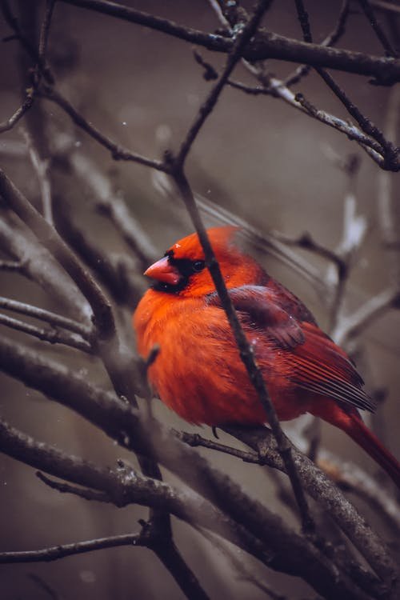

Sweaters, Birding, & Melodic Howling
Hi, my name is Princess Puff...
I'd like to start off by barking about the things and experiences that bring me the most joy. The three things that get my tail wagging the fastest are sweaters, birds, and howling along to some good tunes.
I'm a huge fan of fuzzy sweaters and perhaps spend way too much time letting my hooman dress me up. The only thing I don't like wearing are bows. I roll around to get those pesky bows out of my fur as soon as I get the chance. My sweaters are all cozy, so I don't bother rolling out of those. I enjoy all types of sweater fabrics and colors. I would wear a sweater everyday if it wasn't so hot in Florida. My favorite sweater is red and reminds me of one of my favorite birds, the Northern Cardinal.
I'm a lover of music and enjoy howling along with my hooman to her favorite songs! My favorite howling-songs are all about dogs, since I can relate with them the most.
Some of my favorite songs for howling include:
- Who Let the Dogs Out by Baha Men
- My Dog and Me by John Hiatt
- I Love My Dog by Cat Stevens
- Hound Dog by Elvis Presley
- B-I-N-G-O by various artists
My favorite hobby of all time is bird watching! There are lots of different types of birds that fly into my yard. My hooman helps me learn the names of the different birds when she's outside with me. There are some birds that are bigger than me such as hawks and owls. When I see large birds near my yard I get afraid, but my hooman keeps me safe.